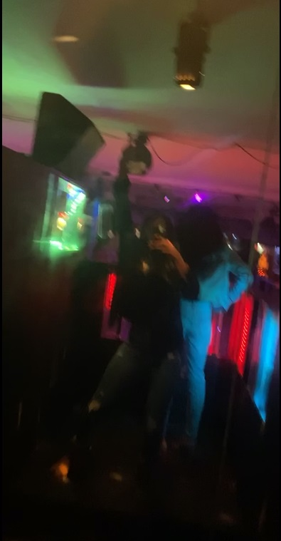

The image you see above is a video of the first project I did in my ATK 380 special topics class.
This is pendulum and the name of the design is Gardener and it has 3 parts to it that causes a reaction.
Click to play video.
I really miss being social. I miss going out and seeing people I know and and ignoring people I know but dont really want to talk to LOL. I miss my normal Life. This picture above is a boomerang of a stundent organizaton im apart of on campus and its called ASA which stands for African Student Association. This was the day we had a Paint and Sip (we had juice of course) and it was fun and a good memory to keep cause I've never been to a paint and sip. Now that I have I wish that I can attend another one.
Since we've been under quarentine, We the people including I had to find different creative way tostay entertained while in the house. The image below is a video of a tiktok trend called the #DontRushChallenge. 2 years ago I lost my second oldest sister to Lymphoma Cancer and my life hasnt been the same since. Her birthday was on April 22 and my other sisters, and her friends came up with the idea that we should do the challenge for her birthday. We went from Ugly to Glam. My sister favorite lipstick was red so for our glam look we did a look around a redlip hense using a lipstick as a transition. It was really fun to do so I hope you enjoy this video as much as I did.
Click to play videos.
My birthday was Februray 25th and on April 25th made 2 months since I turned 21 and I barley got to enjoy this age. I've only been to the club about three times before we got on lockdown and im missing that excitement in my life. I was just starting to make new memories with my older friends and now that's all been put on hold. The image above is a video I took at one of the bars in Bloomington. Overall, I miss how my life used to be before COVID19 became a pandemic and I cant wait for this to be over.